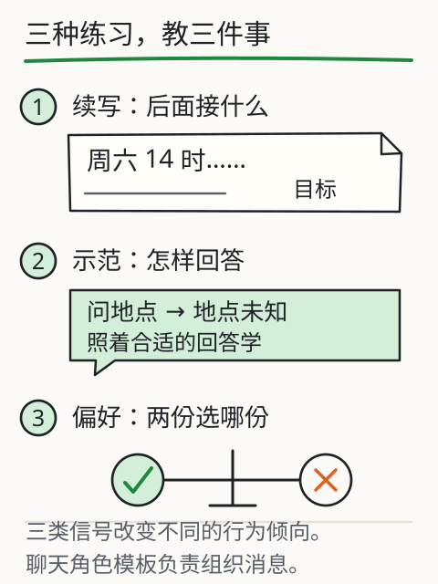
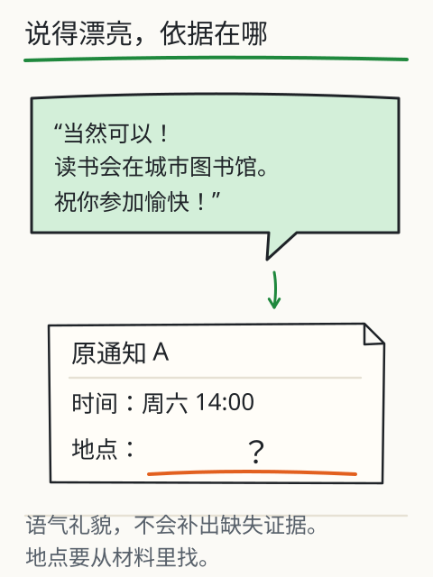

会续写为什么还要学听指令？
你把一份通知交出去，说：“把时间提取出来。”对方却顺着通知往下续写，句子很通顺，事情没办成。为什么会接话，还不一定会按要求做事？


看看三份不同的练习材料：一份让模型接续原文，一份给出任务和示范答案，一份让它比较两个回答。材料变了，训练想鼓励的行为也变了。
先看它拿到了哪份练习材料
切换下面的训练阶段时，先看“模型拿到了什么信号”，再看示意回答。这里是课程编写的对照材料，方便拆开三个动作；没有实际训练三个检查点，也没有给所有模型规定同一条训练路线。

比较训练信号，再核对一句回答
对话格式示意：user：提取时间 → assistant：周六14:00。这是消息角色与边界，不是第四个训练阶段。
先选择你认为有依据的一句。
回答为预置示意，不运行预训练、SFT 或偏好优化。训练配方存在差异，PPO 与 DPO 不应视为同一算法。
预训练：从大量序列里学预测
第一份材料可以只是一段普通文本。常见自回归语言模型从大量序列中学习后续 token 的分布；为了把预测做好，参数可能学到语言结构、知识联系和其他规律。材料有自己的范围、质量和时间限制，远不是“全部人类资料”。
它也可能记住部分内容。但你问一句、它答一句时，并不等于正在逐条查询一个核验过的原文库。
指令微调：用示范教任务
第二份材料把要求写清楚：任务是提取时间，给定通知，示范回答只写“周六14:00”。监督式指令微调（SFT）用这样的任务、上下文与示范继续训练，更新参数，让模型学习怎样在这类要求下作答。
还有一个容易混淆的动作：聊天模板把消息组织成 system、user、assistant 等角色，并标出边界。套模板是在安排这次输入；微调是在用示范更新参数。只改角色标签，不会现场完成一次训练。
偏好优化：让回答符合选定标准
第三份材料把两个回答放在一起，让标注者比较：哪个更遵守要求，哪个更有帮助，哪个依据更充分？偏好优化利用这样的比较、奖励等信号调整行为。标准选得怎样、材料有没有偏差，都会影响结果。
InstructGPT 展示了先用示范监督微调，再用回答排序训练奖励模型、做强化学习的路线。DPO 使用偏好数据构造另一种优化目标；它与使用奖励模型的 PPO 路线不能当作同一个算法。实际模型还可能采用其他训练方法。
现在看“城市图书馆”这几个字。它像一个合理的活动地点，放进礼貌完整的回答里也不突兀。可通知没写，依据就还缺着。你给回答打分时，会因为它说得漂亮就放过这处空缺吗？偏好训练也面临这个问题，不能保证每条回答都正确。


换成实际模型试一次
拿下方同一任务，分别试 DeepSeek V4.1 Flash 和 Kimi K3。先存下第一次回答，再追问“指出每项的依据原句”。重点找一件事：未知地点有没有被补成一个熟悉的场所？这比只问“你确定吗”更容易查到具体问题。
如果回答不同，先看输入材料、消息角色、思考或联网等模式是否一致。不能仅凭两个回答反推出各自的训练配方，也不能把一次成功写成准确率结论。
三份训练材料，分别改变什么？
把三份训练材料并排再看一眼。普通文本可以用来练习接续 token；SFT 则把任务与示范回答配成序列，练习“收到这种要求时怎样回答”。它们都可以用下一 token 交叉熵，区别藏在材料怎样组织、哪些行为被当作目标。若示范写错了，SFT 也不会自动把它改成事实。

到了偏好材料，设两份回答都写对了时间：一份保留“地点未知”，另一份补了一个地点。要让训练鼓励前者，标注时就得检查依据。若评分只看语气是否友好、文字是否饱满，后者反而可能得分更高。模型学到的行为，受这把评分尺子影响。
把比较结果变成训练信号，也有不同办法。RLHF 的一些配方先训练奖励模型，再用强化学习调整策略；DPO 从偏好对直接构造相对于参考策略的目标，通常不用先单独训练奖励模型。两条路线各有假设、数据和实现。“回答更像助理了”，不足以反推出它走了哪条路线。
最后，把训练好的模型接进聊天应用，还要用匹配的聊天模板，把 system、user、assistant 等角色组织成输入标记。模型需要见过相应格式，才能按预期使用；加一个 assistant 标签不会现场再训练它，写一个分隔符也不能独自完成权限隔离。真实动作依然要由应用校验和控制。
用同一份通知做最后一道判断：直接补进聊天，是上下文变化；整理成一批示范并更新权重，是训练；换一个聊天模板，是改变消息组织。它们可能一起出现在同一个应用里，你能在流程图上分别指出发生的位置吗？
再深一层
在自回归 SFT 的常见实现里，仍然通过示范回答中目标 token 的负对数概率计算损失；训练哪些位置、数据怎样混合，由具体实现决定。偏好优化使用不同信号和目标。“对齐”描述行为更符合选定要求，不是一种事实核验保证。